Planning Context
어떤 기획이었나
- 궁극기처럼 전투 핵심 기능은 획득, 장착, 사용, 연출, 쿨타임 정보가 모두 자연스럽게 연결되어야 합니다.
- 전투 중 조작 흐름과 시스템 설명이 충돌하면 신규 기능의 체감이 약해질 수 있습니다.
ProjectN · Combat System
궁극기 시스템의 습득, 선택, 전투 사용, 연출, 정보 확인 흐름을 정리한 전투 시스템 UX 사례입니다.
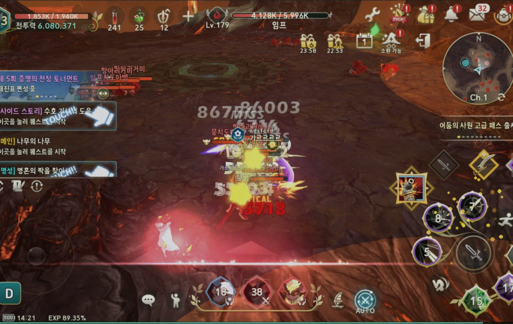
Planning Context
Process
Deliverables
Result
전투 시스템 신규 기능의 습득부터 사용까지 이어지는 UX 흐름을 정리해 기능 이해와 전투 체감을 연결했습니다.
Deliverable Captures
원본 문서는 포함하지 않고, 포트폴리오 확인용으로 일부 페이지만 이미지화했습니다. 슬라이드 마스터/상하단 영역은 흐림 처리했습니다.
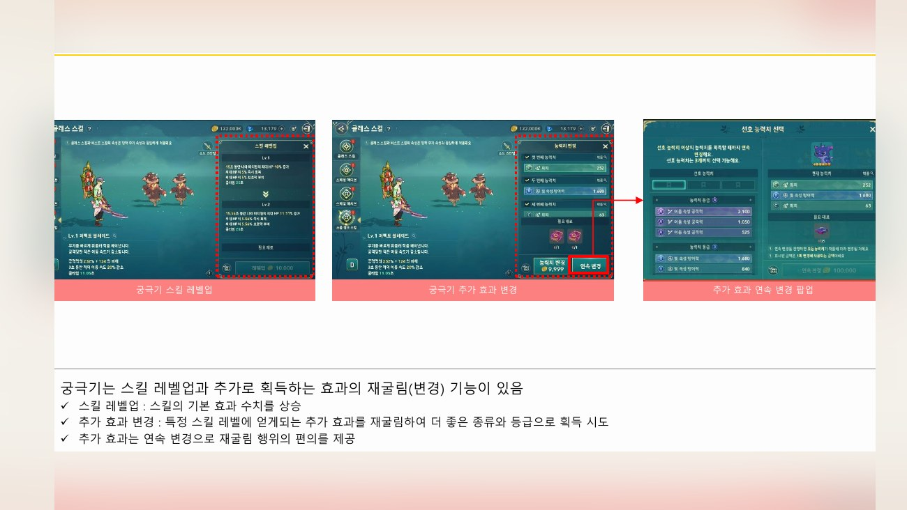
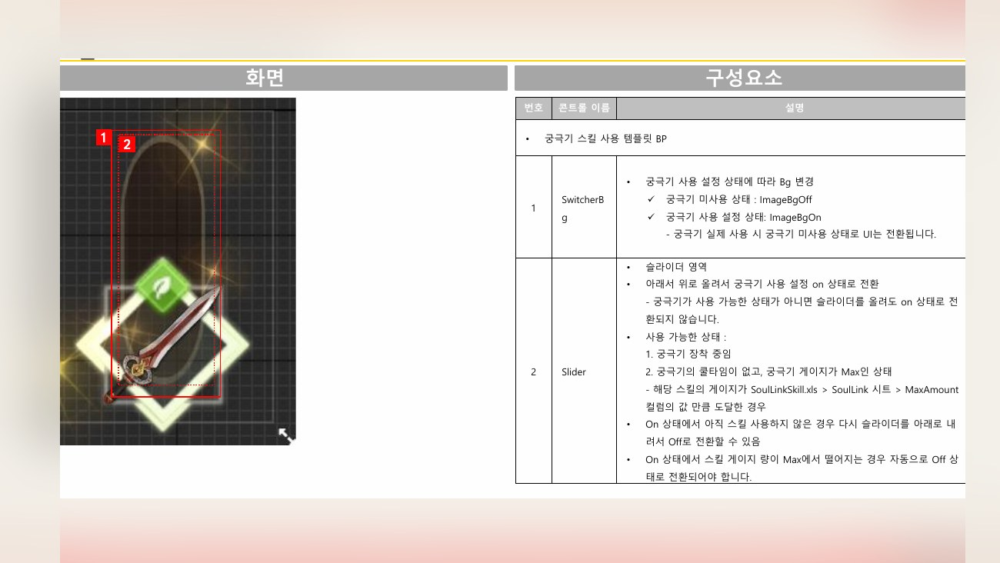
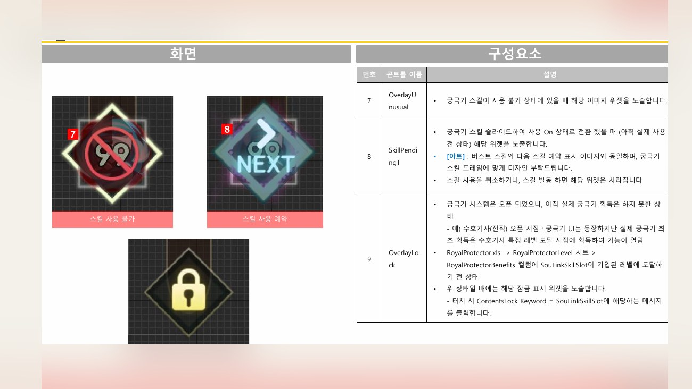
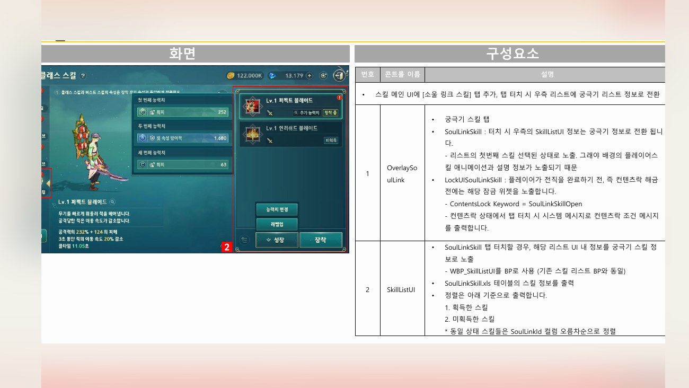
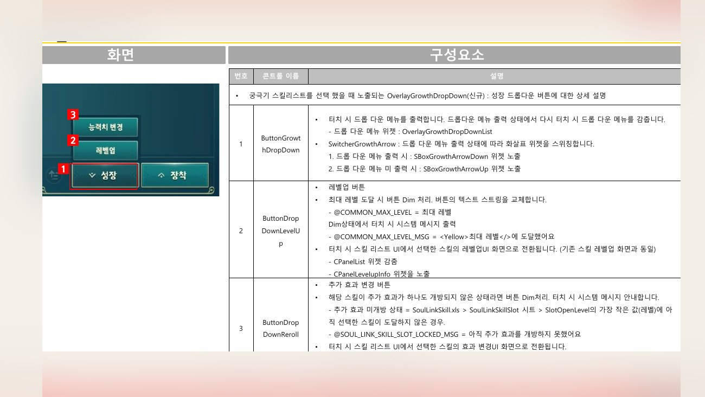
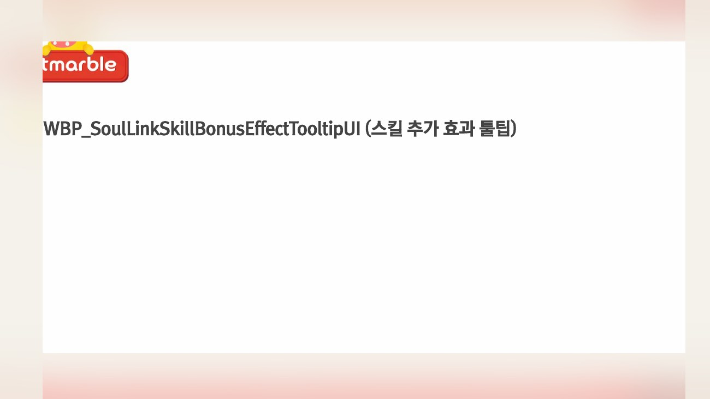
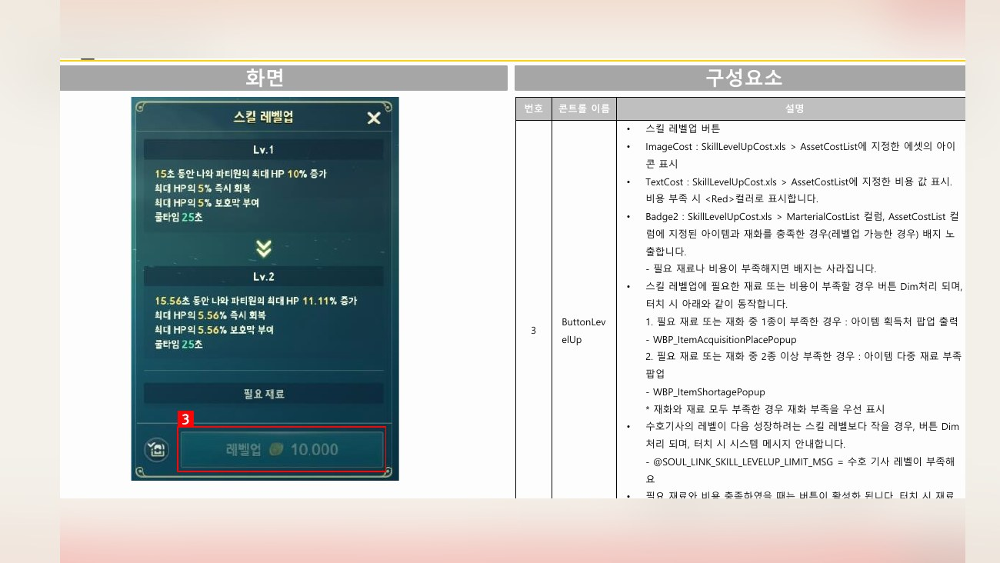
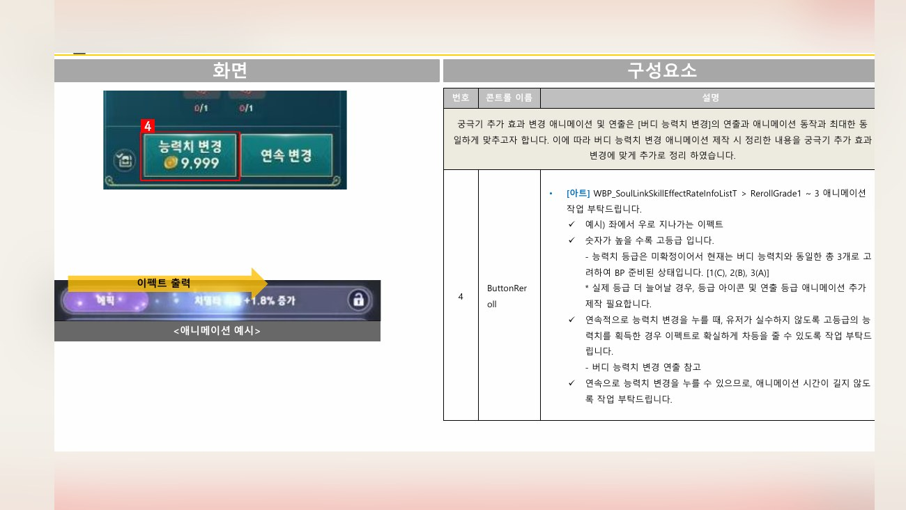
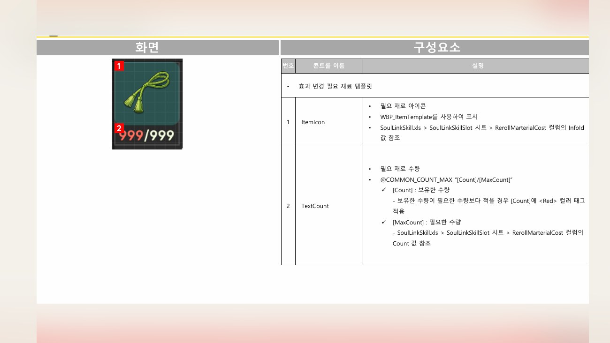
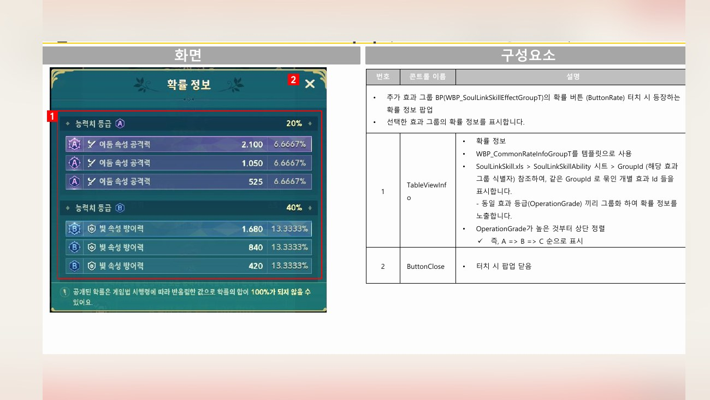